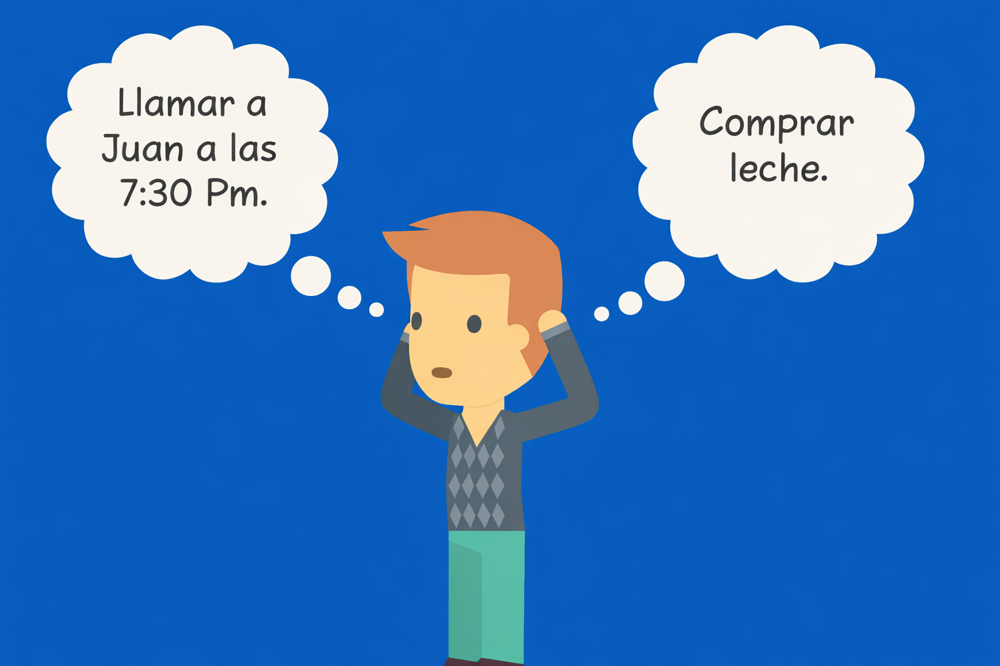

La aplicación inteligente To-Do para gente ocupada.
Comenzemos

Pon las tareas pendientes fuera de tu cabeza.
Deja de pensar en las cosas que tienes que hacer y tus To-Do´s List, deja que nosotros te ayudemos.